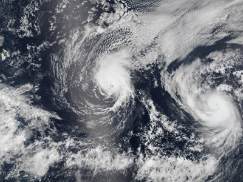

All hurricanes are classified by the Saffir-Simpson Scale. They are given a numerical value, from 1-5. Click a category below to learn what a hurricane needs in order to be given that classification.
Category 1
- Wind speed: 33–42 m/s, 64–82 knots, 74–95 mph, 119–153 km/h
- Dangerous winds. May produce some damage.
- Won't damage most well-constructed buildings, but may knock down unanchored mobile homes and cause power outages.
Category 2
- Wind speed: 43–49 m/s, 83–95 knots, 96–110 mph, 154–177 km/h
- Extremely dangerous winds. Will likely cause extensive damage.
- Many manufactured homes may suffer structural damage, signs and trees may be uprooted, and roofing material is often destroyed. Mobile homes, regardless of their anchoring, are typically damaged or completely destroyed.
Category 3
- Wind speed: 50–58 m/s, 96–112 knots, 111–129 mph, 178–208 km/h
- Devastating damage will occur.
- Category 3 and higher hurricanes are often referred to as "major hurricanes." Can cause structural damages to residences and utility buildings. Can strip roofing, and will usually destroy buildings that don't have any foundation, like mobile homes.
Category 4
- Wind speed: 58–70 m/s, 113–136 knots, 130–156 mph, 209–251 km/h
- Catastrophic damage will occur.
- Complete structural failure might occur to small residences. Structures with overhangs, like gas station canopies, will often be destroyed. Many trees will be uprooted.
Category 5
- Wind speed: ≥70 m/s, ≥137 knots, ≥157 mph, ≥252 km/h
- Catastrophic damage will occur.
- Very few types of structures are able to remain intact, and even then only if they are located a certain distance from the coast. Small buildings may be completely destroyed, and roofs and walls may collapse.